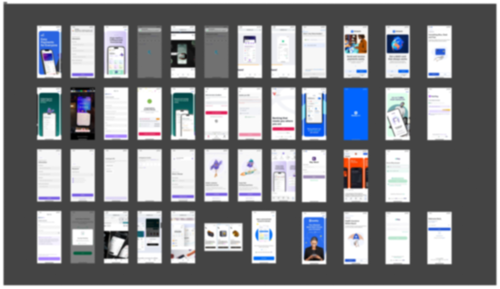
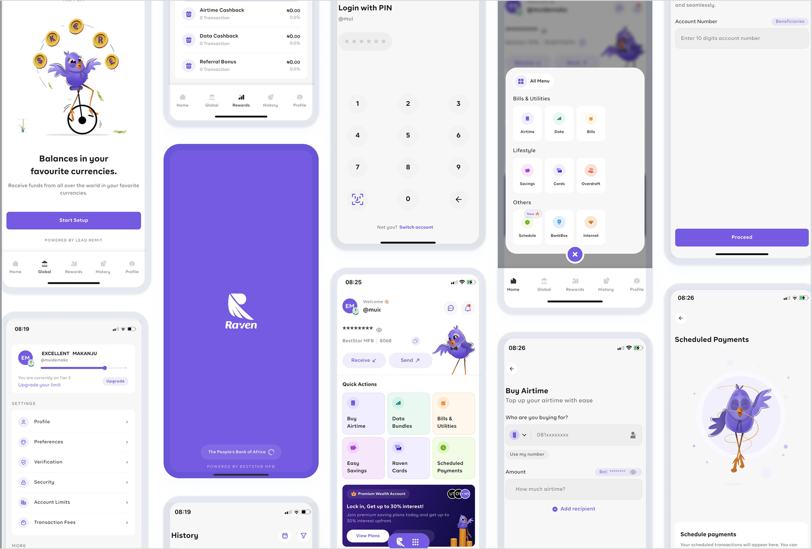
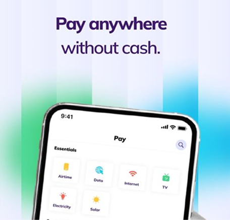
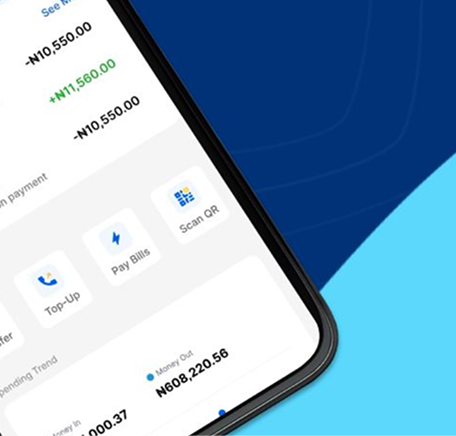
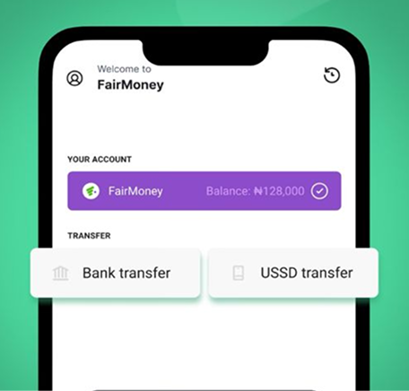
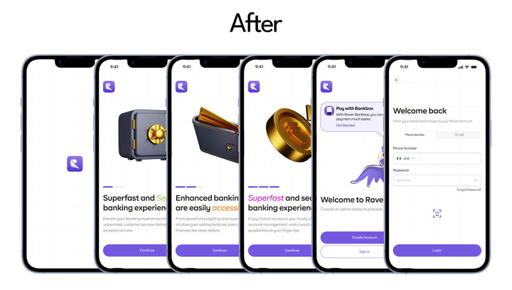
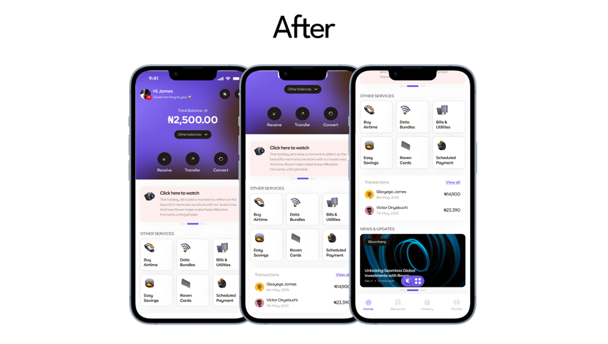
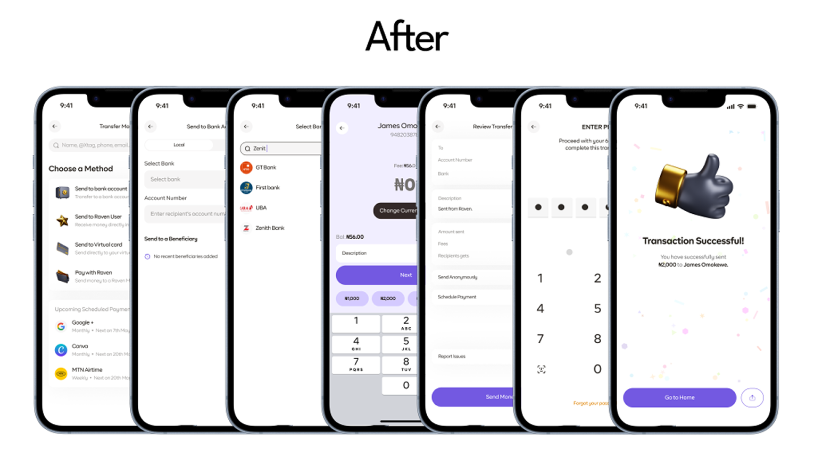

Self-Initiated Redesign
Making A Banking App Read As Serious, Not Cute
Personal banking apps live or die on whether a user trusts them enough to link a card. Raven Pay's original onboarding leaned on a cartoon mascot to feel warm and approachable, but warmth and trust aren't the same design problem, and every serious competitor in the category (Kuda, Moniepoint, Fairmoney) reads more mature than that. This was a self-directed redesign of Raven Pay's onboarding, dashboard, and transfer flow to close that gap.
Goal & Deliverables
Goal
Redesign Raven Pay's personal banking app to feel modern, distinctive, and trustworthy, without losing the fluid, easy-to-understand navigation the original had going for it.
Deliverables
A redesigned onboarding sequence, dashboard, and transfer flow, grounded in a competitor benchmark and a mood board that set the visual direction.
My Design Process
- 01 Discovery Researched modern fintech products to understand core services and identify what to simplify.
- 02 Define Built a mood board and low-fidelity wireframes to explore a style balancing personality with usability.
- 03 Design Designed the components and screens needed for a cohesive experience across the redesigned flows.
- 04 Deliver Iterated the direction against the goal of serving both user experience and Raven Pay's business positioning.
Mood Board
Setting The Visual Direction
Before touching a screen I set the visual direction: what "trustworthy" actually looks like in a Nigerian fintech context, rather than borrowing a generic fintech aesthetic. The board is what I argued the direction from, tangible 3D iconography, restrained surfaces, and typographic emphasis carrying the message instead of a character.

The Old Screens
The Mascot-Led Original
The original app was not badly built. Its navigation was fluid and the flows were easy to follow, which is why the redesign kept the underlying structure. The problem was tone: mascot illustrations that were visually engaging but vague about what the app actually does, or why anyone should trust it with money.

Competitor Analysis
I benchmarked against three products that already own different corners of Nigerian fintech, to ground the redesign in what "modern" actually looks like in this category rather than a generic template.



None of the three lean on a mascot-driven identity, they read as utilities you trust with money, not apps you befriend. That observation is what shaped the central decision below.
Design Decisions
Onboarding
I replaced the mascot illustrations with 3D icon sets that feel more tangible, and emphasized the specific words that matter most to Raven Pay's message rather than leaning on a character to carry it.

Dashboard
Introduced 3D icons to keep a mature aesthetic, blended off-white and white surfaces for cleaner hierarchy, and added a Transaction History section for at-a-glance tracking. I moved behaviour-focused insights out to the profile section so the dashboard stays about money rather than analytics, and integrated a global transaction module to make clear that Raven Pay supports both local and international transfers.

Transfer Money
Kept the existing transfer categories, changing a working mental model has its own cost, but tightened the copy for clarity and surfaced a relevant beneficiary list per transfer type, useful for users who qualify for multiple categories at once.

The One Decision
Drop the mascot entirely rather than modernise it
The mascot was the most visually distinctive thing the original onboarding had, and I removed it. The competitor set made the tradeoff clear: Kuda, Moniepoint and Fairmoney all compete on feeling like a serious place to keep your money, not a charming one. A friendlier mascot might have tested well for delight, but delight isn't the emotion that gets someone to link a card, trust is. I traded a strong, memorable visual identity for one that reads as more credible on first open.
This redesign was as much about restraint as visual polish. The harder discipline was keeping the transfer flow's existing categories rather than "improving" a pattern users already understood, not every screen in a redesign needs to change to justify the redesign.
What Would Prove This Wrong
The bet was that seriousness reads as trust for this audience more than personality does. If usability testing showed users found the 3D-icon onboarding colder or less clear than the original mascot version, that would mean personality mattered more here than I assumed, and the fix would be tone, not iconography.

Usability Testing
Validate that the beneficiary-list-per-category pattern actually speeds up transfer completion versus the original.
Android Parity
This concept was designed against iOS interaction patterns and hasn't been validated for Android.
Onboarding Comprehension
Confirm the 3D icon set communicates as clearly as intended versus the original mascot approach.
Status: Self-initiated design exploration, not a client engagement or shipped product, built to demonstrate how I'd approach a trust-driven fintech redesign.
Other Projects